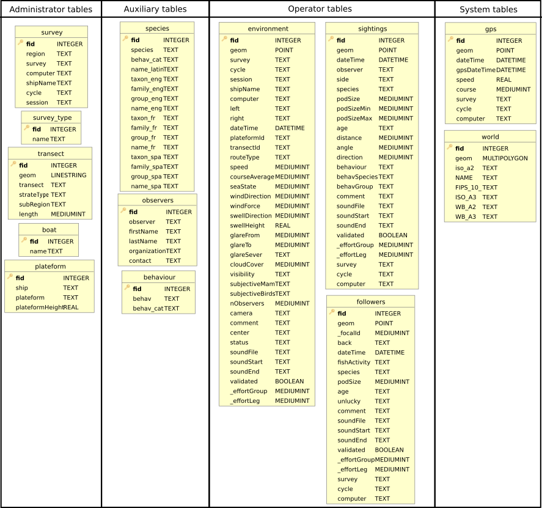

Session
Sammo-boat integrates a session system to works properly. To create a new session
or load a existing session, user clicks on the  button in the
Sammo-boat toolbar (cf. 1 - Session button). User will select a folder in the
dialog.
button in the
Sammo-boat toolbar (cf. 1 - Session button). User will select a folder in the
dialog.
If there is already a sammo-boat.gpkg database in the folder, this session will be opened.
Otherwise a new database will be created in the folder with the needed table. Notice that administrator and auxiliary tables can be populated by csv files, if there are located in the data folder.

This action opens the folder where csv files are located
Database
sammo-boat.gpkg is GeoPackage database suitable with OGC conventions. This data format is handled by QGIS, therefore user can use the Explorer panel to look at the database tables.

Some tables are administrator tables and should be populated with the survey information by an administrator. These tables can be fulfilled using the settings interface (cf. 2 - Settings button) or with csv files during the database initialization :
Table |
csv file |
survey |
survey.csv |
survey_type |
survey_type.csv |
transect |
transect.csv |
boat |
boat.csv |
plateform |
plateform.csv |
There is also three auxiliary tables that can be fulfilled with csv files :
Table |
csv file |
observers |
observers.csv |
species |
species.csv |
behaviour_species |
behav.csv |
The main tables used by operator will be the following:
environment
sighting
follower
Futhermore the gps table will be automatically fulfill by the gps connection and the world table is only here to provide a map background.
Warning
Do not alter tables by removing fields or your database may become unusable in the Sammo-boat plugin.
Here is the full UML diagram of the database:
